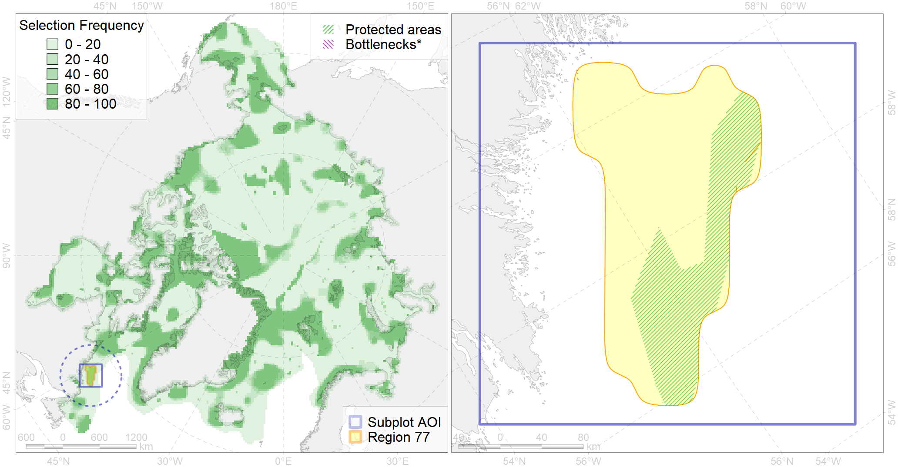

Region 77
Region 77
“ArcNet” scenario 33 achievement for region 77.
Use Accenter for advanced mode.

0
CFs inside of Region completely
0
CFs inside of Region at quarter
4
Complete-targets achievement by Region
6
Half-targets achievement by Region
| CF | Name | Target Achievement for Region | Proportion of Target Achievement in Region | Amount Proportion in Region |
|---|---|---|---|---|
| 5014 | Beluga of the Eeastern Beaufort Sea summer core distribution | 35.5% | 34.5% | 19.1% |
| 2050 | Ringed seal whelping areas in the Labrador region | 45.6% | 45.3% | 18.0% |
| 3023 | Marginal Ice Zone distribution in April in the Labrador Sea LME | 134.1% | 39.3% | 17.2% |
| 7147 | III.4.2. Baffinian - Labrador slope | 143.3% | 27.0% | 14.1% |
| 6075 | Common murre (Uria aalge aalge) breeding grounds | 20.5% | 19.5% | 13.8% |
| 5030 | Beluga of the Ungava Bay winter distribution | 95.0% | 23.6% | 12.6% |
| 5033 | Beluga of the Western Hudson Bay winter distribution | 23.7% | 23.6% | 12.6% |
| 2012 | Bearded seal whelping areas in the Labrador area | 32.5% | 21.1% | 9.6% |
| 2023 | Harp seal foraging areas in the Labrador region | 33.8% | 18.7% | 9.6% |
| 5060 | Humpback whale summer feeding areas in the Northwest Atlantic | 32.3% | 14.7% | 8.2% |
| 7145 | III.2.1.4. Ungava -Labradoran shelf | 119.4% | 16.1% | 6.5% |
| 4080 | Fish zoogeography, Deepsea Atlantic Region, North-Atlantic Abyssal Province (11A -Scandian, 11B - Central-Arctic and 11C - Baffin Deep-sea Districts ) | 109.0% | 19.3% | 6.0% |
| 3132 | polynya Labrador | 36.6% | 8.4% | 6.0% |
| 6041 | Ivory gull (Pagophila eburnea) postbreeding grounds in the Canadian Arctic | 20.7% | 8.0% | 4.9% |
| 6034 | Ivory gull (Pagophila eburnea) Atlantic wintering grounds | 17.9% | 9.0% | 4.3% |
| 6101 | 6101 Uriaalge aalge breeding colonies | 7.6% | 5.4% | 3.4% |
| 4028 | Feeding/migration area of the Atlantic salmon (Salmo salar) American populations (F27) | 24.0% | 7.7% | 3.2% |
| 4056 | Distribution of the American Plaice (Hippoglossoides platessoides) (F 47), European populations | 75.1% | 4.8% | 2.5% |
| 6002 | Little Auk (Alle alle alle) winetring grounds | 7.7% | 5.3% | 2.0% |
| 6076 | Common murre (Uria aalge aalge) wintering grounds | 10.0% | 5.3% | 2.0% |
| 9005 | polar bear of the DS (Davis Strait) subpopulation distribution | 4.3% | 3.2% | 1.7% |
| 4031 | Feeding area of the Brook Trout (Salvelinus fontinalis) (F 29) | 8.7% | 3.6% | 1.7% |
| 6072 | King eider (Somateria spectabilis) Canadian winetring grounds | 2.6% | 2.2% | 1.6% |
| 4035 | Feeding area of the Lake trout (Salvelinus namaycush) (F32) | 7.9% | 3.2% | 1.6% |
| 2019 | Harbour seal range in the North Atlantic region | 22.5% | 3.4% | 1.5% |
| 4011 | Feeding area of the Lake whitefish (Coregonus clupeaformis) (F 16) | 2.1% | 2.0% | 1.1% |
| 4085 | Fish zoogeography, Arctic Region, Subarctic Transitional-Atlantic Province, Labrador – S Greenland District | 9.8% | 2.1% | 1.1% |
| 4046 | Range of the Thorny Skate (Amblyraja radiata) (F 3) | 12.4% | 2.3% | 1.0% |
| 6049 | Black-legged kittiwake (Rissa tridactyla tridactyla) wintering grounds | 2.9% | 2.9% | 1.0% |
| 4045 | Feeding/migration area of the Pink Salmon (Oncorhynchus gorbuscha), native distribution (F23) | 13.3% | 2.2% | 0.9% |
| 4059 | Range of the Greenland Halibut (Reinhardtius hippoglossoides) (F 49) | 26.3% | 2.2% | 0.9% |
| 6083 | Thick-billed murre (Uria lomvia lomvia) wintering grounds | 3.0% | 2.1% | 0.8% |
| 4003 | Range of the Atlantic Capelin (Mallotus villosus) (F10) | 23.6% | 2.0% | 0.8% |
| 4029 | Feeding area of the Arctic charr (Salvelinus alpinus), anadromous populations (F28) | 1.6% | 1.4% | 0.8% |
| 4017 | Feeding/ migration area of the Greenland Shark (Somniosus microcephalus) (F1) | 3.1% | 1.8% | 0.7% |
| 2027 | Hooded seal foraging areas | 1.1% | 1.0% | 0.5% |
| 2030 | Hooded seal wheling areas in the Front region | 1.0% | 1.0% | 0.5% |
| 6023 | Atlantic puffin (Fratercula arctica naumanni) wintering grounds | 1.9% | 1.5% | 0.5% |
| 4048 | Feeding/nursery area of the ogac (Gadus ogac ) (F 41) | 2.1% | 0.5% | 0.4% |
| 4055 | Range of the Shorthorn Sculpin (Myoxocephalus scorpius) (F 46), American populations | 5.5% | 0.3% | 0.2% |
| 6015 | Black guillemot (Cepphus grylle mandti) breeding grounds | 0.8% | 0.2% | 0.1% |
| 4041 | Range of the Polar Cod (Boreogadus saida) (F35) | 0.2% | 0.1% | 0.0% |
| 6029 | Glaucous gull (Larus hyperboreus euceretes) breeding grounds | 0.0% | 0.0% | 0.0% |
| 5112 | Arctic Cetaceans (beluga, bowhead, narwhal) winter habitats as predicterd by MIZ | 0.0% | 0.0% | 0.0% |